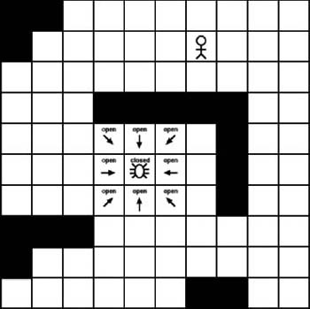

|
|
< Day Day Up > |
|
7.2 Starting the SearchOnce we have simplified the search area so that it's made up of a reasonable number of nodes, we are ready to begin the search. We will use the A* algorithm to find the shortest path between any two nodes. In this example, we will use a small tiled environment. Each tile will be a node in the search area and some nodes will contain obstacles. We will use the A* algorithm to find the shortest path while avoiding the obstacles. Example 7-1 shows the basic algorithm we will follow. Example 7-1. Example 7-1. A* pseudo code
add the starting node to the open list
while the open list is not empty
{
current node=node from open list with the lowest cost
if current node = goal node then
path complete
else
move current node to the closed list
examine each node adjacent to the current node
for each adjacent node
if it isn't on the open list
and isn't on the closed list
and it isn't an obstacle then
move it to open list and calculate cost
}
Some of the particulars of the pseudo code shown in Example 7-1 might seem a little foreign, but they will become clear as we begin stepping through the algorithm. Figure 7-3 shows the tiled search area that we will use. The starting point will be the spider near the center. The desired destination will be the human character. The solid black squares represent wall obstacles, while the white squares represent areas the spider can walk on. Figure 7-3. Creating a tiled search areaLike any pathfinding algorithm, A* will find a path between a starting node and an ending node. It accomplishes this by starting the search at the starting node and then branching out to the surrounding nodes. In the case of this example, it will begin at the starting tile and then spread to the adjacent tiles. This branching out to adjacent tiles continues until we reach the destination node. However, before we start this branching search technique, we need a way to keep track of which tiles need to be searched. This is typically called the open list when using the A* algorithm. We begin with just one node in the open list. This is the starting node. We will add more nodes to the open list later. (Note, we'll use the terms nodes and tiles interchangeably when referring to tiled environments.) Once we have built the open list, we traverse it and search the tiles adjacent to each tile on the list. The idea is to look at each adjacent tile and determine if it is a valid tile for the path. We basically are checking to see if the adjacent tiles can be walked on by a game character. For example, a road tile would be valid, whereas a wall tile probably would not be valid. We proceed to check each of the eight adjacent tiles and then add each valid tile to the open list. If a tile contains an obstacle, we simply ignore it. It doesn't get added to the open list. Figure 7-4 shows the tiles adjacent to the initial location that need to be checked. Figure 7-4. Adjacent tiles to considerIn addition to the open list, the A* algorithm also maintains a closed list. The closed list contains the tiles that already were checked and no longer need to be examined. We essentially add a tile to the closed list once all its adjacent tiles have been checked. As Figure 7-5 shows, we have checked each tile adjacent to the starting tile, so the starting tile can be added to the closed list. Figure 7-5. Moving the starting tile to the closed listSo, as Figure 7-5 shows, the end result is that we now have eight new tiles added to the open list and one tile removed from the open list. The description so far shows the basic iteration through a main A* loop; however, we need to track some additional information. We need some way to link the tiles together. The open list maintains a list of adjacent tiles that a character can walk on, but we also need to know how the adjacent tiles link together. We do this by tracking the parent tile of each tile in the open list. A tile's parent is the single tile that the character steps from to get to its current location. As Figure 7-6 shows, on the first iteration through the loop, each tile will point to the starting tile as its parent. Figure 7-6. Linking to the parentsUltimately we will use the parent links to trace a path back to the starting tile once we finally reach the destination. However, we still need to go through a series of additional iterations before we reach the destination. At this point we begin the process again. We now have to choose a new tile to check from the open list. On the first iteration we had only a single tile on the open list. We now have eight tiles on the open list. The trick now is to determine which member of the open list to check. We determine this by applying a score to each tile. |
|
|
< Day Day Up > |
|